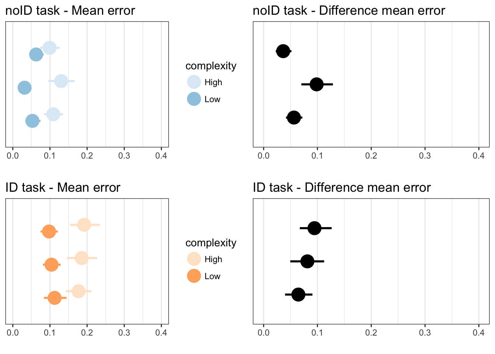
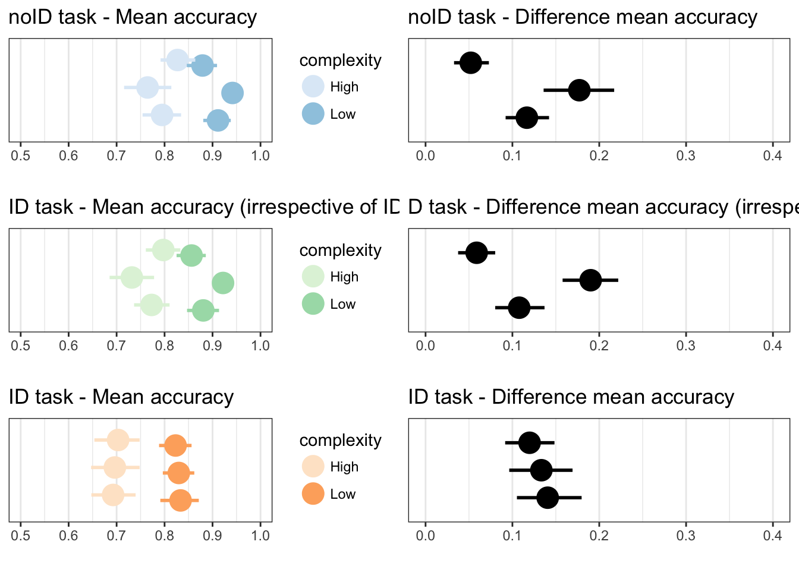

The Not-So-Staggering Effect of
Staggered Animation
Experiment 1 Replication Material
This page contains additional material to facilitate analysis and replication of our study of staggered animation including participant logs, R scripts for analysis, as well as the java application used for the experiement and instructions for participants of the study.
 All material on this page is CC-BY-SA. If you reuse or adapt it please reference our article and/or link to this page.
All material on this page is CC-BY-SA. If you reuse or adapt it please reference our article and/or link to this page.
Goal of the experiment
The goal of this first experiment was to validate the task complexity metrics as we define them in the paper. Note that this experiment does not involve staggering.
Video instructions
Experimental Program (zip archive)
To run the experiment, unzip the archive and run the Java executable Experiment1.jar.
You need to have Java installed on your computer.

Analysis and replication materials
- Download the experimental data (csv file)
- Downlaod the R script below
#------------------ LIBRARIES --------------------------#
install.packages("ggplot2", repos="http://cran.utstat.utoronto.ca/")##
## The downloaded binary packages are in
## /var/folders/9s/1kyml98x6f7854mqs56lxrb00000gq/T//Rtmp1U9zxU/downloaded_packageslibrary(ggplot2)
install.packages("boot", repos="http://cran.utstat.utoronto.ca/")##
## The downloaded binary packages are in
## /var/folders/9s/1kyml98x6f7854mqs56lxrb00000gq/T//Rtmp1U9zxU/downloaded_packageslibrary(boot)
install.packages("gridExtra", repos="http://cran.utstat.utoronto.ca/")##
## The downloaded binary packages are in
## /var/folders/9s/1kyml98x6f7854mqs56lxrb00000gq/T//Rtmp1U9zxU/downloaded_packageslibrary(gridExtra)
#-------------------------------------------------------#
#------------------ NAMES AND LABELS -------------------#
### short names for columns
crowd <- 'complexity_crowding'
innercrowd <- 'complexity_innercrowding'
deform <- 'complexity_deformation'
norm_error <- 'normalized_error'
accuracy <- 'ID_accuracy'
accuracy_irrespectiveofID <- 'noID_accuracy'
### text labels for charts
lDeform <- 'Deformation'
lincrowd <- 'Inner crowding'
lCrowd <- 'Crowding'
taskA_label <- 'noID'
taskB_label <- 'ID'
#-------------------------------------------------------#
#------------ LOAD AND CHECK DATA ----------------------#
logs <- "experimental-materials/staggeredAnimation-xp1-logs.csv"
NB_PARTICIPANTS = 20 ## Our experimental setup
NB_REPS = 8
NB_CONDITIONS = 8
data = read.csv(logs, sep="\t", head=TRUE)
data <- data[data$is_practice != 'true',] ## Filter out practice trials
#### filter by idTrack
taskA <- data[data$is_idTrack == 'false',]
taskB <- data[data$is_idTrack == 'true',]
### SANITY CHECK ###
if (length(taskA[,1]) != NB_PARTICIPANTS*NB_REPS*NB_CONDITIONS)
cat("Warning: wrong number of trials for Condition A")
if (length(taskB[,1]) != NB_PARTICIPANTS*NB_REPS*NB_CONDITIONS)
cat("Warning: wrong number of trials for Condition B")
#-------------------------------------------------------#
#--------------- USEFUL FUNCTIONS ----------------------#
##### get subset corresponding to a complexity level 'level' of a measure 'measure'
getSubsetByComplexity <- function(x, measure, level) {
result <- x[x[,measure]==level,]
if (length(result[,1]) != NB_PARTICIPANTS*NB_REPS*NB_CONDITIONS/2) ### sanity check
cat("Warning: wrong number of trials in getSubsetByComplexity")
return (result)
}
## Exemple: call getSubsetByComplexity(condA, innercrowd, 'E')
aggregateParticipant <- function(x,measure,f) {
if (f=="mean")
return (aggregateMean(x,measure))
else
return (aggregateMedian(x,measure))
}
###### get mean per participant
aggregateMean <- function(x, measure) {
aggdata <- aggregate(x[,measure] ~ participant, data = x, mean)
return (aggdata)
}
###### get median per participant
aggregateMedian <- function(x, measure) {
aggdata <- aggregate(x[,measure] ~ participant, data = x, median)
return (aggdata)
}
##### get global percent of success
getPercent <- function(x, measure) {
aggdata <- aggregate(x[,measure] ~ participant, data = x, sum)
aggdata[,2] <- aggdata[,2]/48
return (aggdata)
}
### get mean of a vector by Measure
getMean <- function(x,measure) {
mean(x[,measure])
}
### get median of a vector by Measure
getMedian <- function(x,measure) {
return(median(x[,measure]))
}
### get confidence interval
getCI <- function(x,f) {
if (f == "mean")
return(getCIMean(x))
else # median
return(getCIMedian(x))
}
### get Confidence interval (mean)
getCIMean <- function(x) {
number.measures <- length(x)
number.samples <- 5000
sample.mean <- function(x, index) {
return(mean(x[index]))
}
boot.object <- boot(x, sample.mean, R = number.samples)
confidence.intervals <- quantile(boot.object$t, c(0.025, 0.975)) #the samples are in boot.object$t
boot.object$t0 # the mean
return (confidence.intervals)
}
### get Confidence interval (median)
getCIMedian <- function(x) {
number.measures <- length(x)
number.samples <- 5000
sample.median <- function(x, index) {
return(median(x[index]))
}
boot.object <- boot(x, sample.median, R = number.samples)
confidence.intervals <- quantile(boot.object$t, c(0.025, 0.975)) #the samples are in boot.object$t
boot.object$t0 # the median
return (confidence.intervals)
}
## get Lower value of a CI,
# Param: column=<normalized_error, accuracy>, f=<"mean", "median">
getLowerCI <- function(x, f) {
ci <- getCI(x,f)
ci <- as.data.frame(ci)
return(ci[1,1])
}
getUpperCI <- function(x, f) {
ci <- getCI(x,f)
ci <- as.data.frame(ci)
return(ci[2,1])
}
#-------------------------------------------------------#
#--------------- FUNCTIONS FOR PLOTS ----------------------#
# This function displays the plots
# Parameters :
# task = <taskA, taskB>
# f = <median, mean>
# measure = <norm_error, accuracy>
# measure_label = lable of the x axis
# colour_palette = colour palette for brewer (1:blue, 4:green, 7:orange)
# title = title of the plot
# xmin, xmax = xlimits of the plot
plotLowHigh <- function(task, f, measure, measure_label, colour_palette, title, xmin, xmax) {
crowd_L <- aggregateParticipant(getSubsetByComplexity(task,crowd,'L'),measure,f)[,2]
crowd_H <- aggregateParticipant(getSubsetByComplexity(task,crowd,'H'),measure,f)[,2]
incrowd_L <- aggregateParticipant(getSubsetByComplexity(task,innercrowd,'L'),measure,f)[,2]
incrowd_H <- aggregateParticipant(getSubsetByComplexity(task,innercrowd,'H'),measure,f)[,2]
deform_L <- aggregateParticipant(getSubsetByComplexity(task,deform,'L'),measure,f)[,2]
deform_H <- aggregateParticipant(getSubsetByComplexity(task,deform,'H'),measure,f)[,2]
L_points <- c(mean(crowd_L), mean(incrowd_L), mean(deform_L))
if (f=="median") L_points <- c(median(crowd_L), median(incrowd_L), median(deform_L))
L_lower_CIs <- c(getLowerCI(crowd_L,f), getLowerCI(incrowd_L,f), getLowerCI(deform_L, f))
L_upper_CIs <- c(getUpperCI(crowd_L,f), getUpperCI(incrowd_L,f), getUpperCI(deform_L, f))
H_points <- c(mean(crowd_H), mean(incrowd_H), mean(deform_H))
if (f=="median") H_points <- c(median(crowd_H), median(incrowd_H), median(deform_H))
H_lower_CIs <- c(getLowerCI(crowd_H,f), getLowerCI(incrowd_H,f), getLowerCI(deform_H, f))
H_upper_CIs <- c(getUpperCI(crowd_H,f), getUpperCI(incrowd_H,f), getUpperCI(deform_H, f))
dfr <- data.frame( # data frame with f and CIs
x = c(L_points,H_points),
y = rep(c("Crowding","Inner crowding","Deformation"), 2),
upper = c(L_upper_CIs, H_upper_CIs),
lower = c(L_lower_CIs, H_lower_CIs),
complexity = rep(c("Low","High"), each = 3)
)
dfr$y_numeric <- c(0.9,1.9,2.9,1.1,2.1,3.1)
dfr
p <- ggplot(dfr, aes(x, y_numeric, colour = complexity)) +
geom_point(size = 6) +
geom_errorbarh(aes(xmin=lower, xmax=upper), height = .0, size = 1) +
scale_colour_brewer(palette=colour_palette) +
coord_cartesian(xlim = c(xmin, xmax), ylim = c(0.7,3.3)) +
scale_y_discrete(breaks=c(1,2,3), labels=c("Crowding","Inner crowding","Deformation")) +
xlab(measure_label) +
theme_bw() +
theme(axis.title.y = element_blank(), axis.line.y = element_blank()) +
ggtitle(title)
return (p)
}
plotDifference <- function(task, f, measure, measure_label, title, xmin, xmax) {
crowd_L <- aggregateParticipant(getSubsetByComplexity(task,crowd,'L'),measure,f)[,2]
crowd_H <- aggregateParticipant(getSubsetByComplexity(task,crowd,'H'),measure,f)[,2]
incrowd_L <- aggregateParticipant(getSubsetByComplexity(task,innercrowd,'L'),measure,f)[,2]
incrowd_H <- aggregateParticipant(getSubsetByComplexity(task,innercrowd,'H'),measure,f)[,2]
deform_L <- aggregateParticipant(getSubsetByComplexity(task,deform,'L'),measure,f)[,2]
deform_H <- aggregateParticipant(getSubsetByComplexity(task,deform,'H'),measure,f)[,2]
if (measure == accuracy || measure == accuracy_irrespectiveofID) {
crowd_diff <- crowd_L - crowd_H
incrowd_diff <- incrowd_L - incrowd_H
deform_diff <- deform_L - deform_H
}
else {
crowd_diff <- crowd_H - crowd_L
incrowd_diff <- incrowd_H - incrowd_L
deform_diff <- deform_H - deform_L
}
points <- c(mean(crowd_diff), mean(incrowd_diff), mean(deform_diff))
if (f=="median") L_points <- c(median(crowd_diff), median(incrowd_diff), median(deform_diff))
lower_CIs <- c(getLowerCI(crowd_diff,f), getLowerCI(incrowd_diff,f), getLowerCI(deform_diff, f))
upper_CIs <- c(getUpperCI(crowd_diff,f), getUpperCI(incrowd_diff,f), getUpperCI(deform_diff, f))
dfr <- data.frame( # data frame with differences and CIs
x = points,
y = c("Crowding","Inner crowding","Deformation"),
upper = upper_CIs,
lower = lower_CIs
)
dfr$y_numeric <- c(1,2,3)
dfr
p <- ggplot(dfr, aes(x, y_numeric)) +
geom_point(size = 6) +
geom_errorbarh(aes(xmin=lower, xmax=upper), height = .0, size = 1) +
coord_cartesian(xlim = c(xmin, xmax), ylim = c(0.7,3.3)) +
scale_y_discrete(breaks=c(1,2,3), labels=c("Crowding","Inner crowding","Deformation")) +
xlab(measure_label) +
theme_bw() +
theme(axis.title.y = element_blank(), axis.line.y = element_blank()) +
ggtitle(title)
return (p)
}
#/------- PLOTS ---------/#
p1 <- plotLowHigh(taskA, "mean", norm_error, "", 1, "noID task - Mean error", 0, 0.4)
p2 <- plotDifference(taskA, "mean", norm_error, "", "noID task - Difference mean error", 0, 0.4)
p3 <- plotLowHigh(taskB, "mean", norm_error, "", 7, "ID task - Mean error", 0, 0.4)
p4 <- plotDifference(taskB, "mean", norm_error, "", "ID task - Difference mean error", 0, 0.4)
p11 <- plotLowHigh(taskA, "mean", accuracy, "", 1, "noID task - Mean accuracy", 0.5, 1)
p12 <- plotDifference(taskA, "mean", accuracy, "", "noID task - Difference mean accuracy", 0, 0.4)
p13 <- plotLowHigh(taskB, "mean", accuracy, "", 7, "ID task - Mean accuracy", 0.5, 1)
p14 <- plotDifference(taskB, "mean", accuracy, "", "ID task - Difference mean accuracy", 0, 0.4)
p15 <- plotLowHigh(taskB, "mean", accuracy_irrespectiveofID, "", 4, "ID task - Mean accuracy (irrespective of ID)", 0.5, 1)
p16 <- plotDifference(taskB, "mean", accuracy_irrespectiveofID, "", "D task - Difference mean accuracy (irrespective of ID)", 0, 0.4)
#/-------- PLOT RESULTS --------/#
grid.arrange(p1,p2,p3,p4, ncol=2)
grid.arrange(p11,p12,p15,p16,p13,p14, ncol=2)